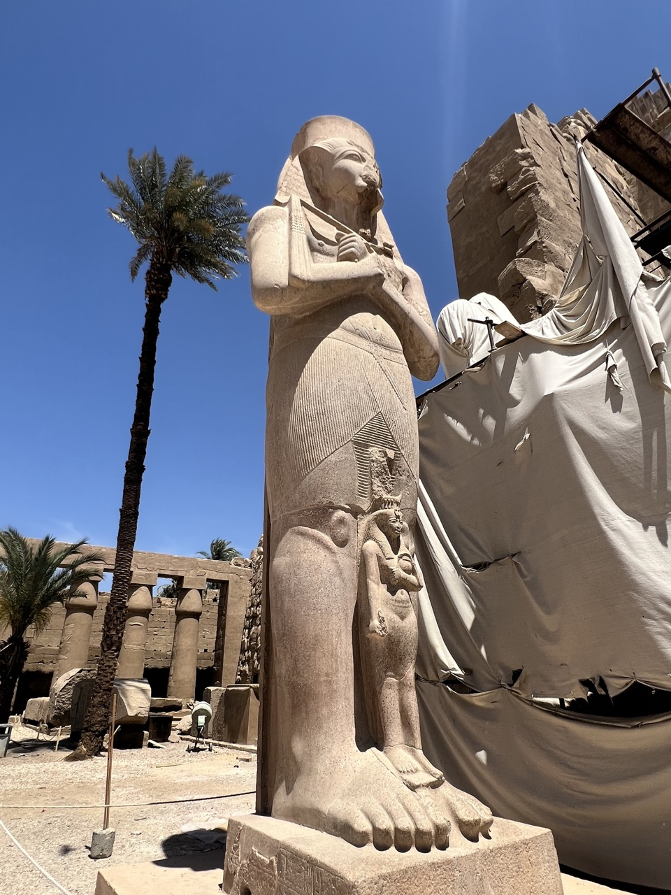

算法竞赛终点。
赛前准备
2024-03-19 发现必须开始训练算法竞赛了，距比赛只剩下25天了。打开了最近一场CF 934热身，看一圈发现题都还挺会做，只是需要留出充分长的时间口胡和写代码。于是启动了Um_nik无监督训练法，直到D1、E1。D2的容斥trick忘了，读题解补习了一下。
2024-03-23 拿了NAC’23的题个人训练，结果发现题太水了，过于不仿真，放弃了。之后一定得做WF真题。算了下账感觉必须之后天天都做真题了。训量化模型要用8年历史数据了，训高考要五年高考三年模拟，in sample的数据没训完不太行。
2024-03-24 三人三地三机组队训练。打了EC Final 2024，爬了。I题就是简单边双+树上DP但我过于老年，直接放弃写了。。提高自己水平，任重道远啊。。感觉队友好像也失去了信心。但是我觉得从现在开始训，还来得及。我目前也是队里最闲的，打比赛好像能让我更有一种知道自己在干什么的感觉。虽然自己最弱，但要加训，争取不当瓶颈！
2024-03-27 终于把EC Final I补了，算法竞赛真是时间杀手。。写的巨麻烦，不知道是自己擅长把简单题写复杂还是啥。至此剩下除了A题2AC，别的题都0AC了，感觉可能不补也罢了。已经神智不清了。这两天循环训（模型/身体/算法竞赛），真实帕鲁训练家。选择了复活节和清明节各休一天假专心训练。。之后都只练WF题。
2024-03-31 本来约好了时间，特意早起，但队友也不来训练了。感觉也在意料之中。也没法强求队友训练。自己太菜，好好提升自己吧！按照自己要单挑的标准去训练。倒着开题打了下这天的CF。前几天在做WF 20 Moscow的题，发现题都不是很好做，容易假，也不是很好写。以及甚至还会考裸板子题，比如半平面交。
2024-04-05 这几天，才发现WF20的签到是多简单。。以及发现WF20的一个只有1AC的线性代数题无比简单，和N维正多面体那个差不多，搞出一个矩阵的零空间的正交基，再操作下就完事了。然而码力还是比之前大幅下降了，写了两个小时才过。。
2024-04-06 写了一天题写吐了。。今天做了icpc2019的题，做了两年题的总体感觉是这比赛即使简单题也会有点实现难度，对我这种忘了怎么写代码的不算非常友好。。困难题思路可能也没很难？昨天2020的一个1ac的题就是个简单线性代数，我几分钟就想出来了（不过写了两小时）。以及需要板子，比如这场就有广义后缀自动机模版题。。今天五小时过了五个题，过的题都挺无脑的，却写了挺久，基本每题从开始到写完都恰好一小时，好在所有题都一发过了。看评测记录，别的队都在训练。。唉自己现在还很菜，感觉寄了。有七个签到题，剩下两个签到口胡了也不难。把这七个题做了就能rk13及以上了，这是在WF现场理应要达到的标准——签完所有到。
发现没打过ACM的人、早就退役的人，都已经把往年WF题做了，写了题解。自己却来不及做完所有WF题。罪过啊。
2024-04-07 看到了WF题出现过的路牌
2024-04-08 感觉wf本质就是写一些没那么难想但不好实现的题。深刻感觉wf就是比写代码速度，要把签到题都过了。这场的银牌以上题，两个大模拟，一个几何，一个牛逼思维题。
2024-04-11 这几天发现时间更不够用了。。得跳过自己写，口胡完直接读题解了。今天练划船还把腰伤到了。。全错。
2024-04-12 起飞前最后一天。下班后我立即（顶着腰伤）到公司对面的文具佬商店购买了文具，蹭公司打印机，打印了板子、签证、各种文档，完成了这些后勤工作。才发现队友票买错了、买晚了、不想去了，要在报道日深夜、第二天才到。。
目标：做完签到题就是成功。做完签到题就拿牌了。不一定，还有可能是rk13。
2024-04-13 和ddd到广州包三餐的洗浴中心汇合，一起出发。听ddd讲了昨天的刺激新故事，和WF赛场策略的经验。看ddd打了桌球。喝到了无比好喝的鱼片汤。
埃及之行
2024-04-13 飞开罗的飞机上，口胡了一些往年题，和ddd确认了做法和坑点（当然更多的时候是间歇睡觉）。发现之前还考我准备quant面试时做的结论题，还没啥人ac，大为震撼。
2024-04-14 飞卢克索的飞机上，感觉都是ICPC选手，和坐左边的说英语选手交谈了下才知道这居然是47届MIT的选手。我说你们要赢了，他说46届邓老师队才要赢，给我指了anton坐在我左边的左边。我无尽orz。正好天亮了，看到飞机窗外，有种非常抽象的感觉，才意识到自己居然来到了非洲。尼罗河旁边是城市，而远处就是撒哈拉沙漠。
从Luxor机场出来，上了大巴车。志愿者对于我和ddd没带行李箱感到非常惊讶。大巴车上我查了才知道原来埃及用的是真-阿拉伯数字。学习了下数字的映射，以备辨识车牌号（虽然最后也没用到）
到了Jollie Ville酒店，酒店位于尼罗河中一个岛的中间。结果checkin排了无数人，把护照收走后开始了无尽等待。还是华为赞助商的好心人带我们去他们房间休息了一会儿，在餐厅吃了午饭（主办方没有包午饭）。
最终，到达酒店的六小时后，我们终于拿到了房卡。我们住在下图这样一个房子里面。埃及的天气是真不错，可惜虫子实在是太多了，穿短裤在室外，有要直接被蚊虫吃掉的节奏。
team registration。但是只有我和ddd到了，队友都要更晚才到，于是我们两个人去注册了，和主办方解释了情况，于是领了6个人的物资，照了两个人的相，蹒跚着回到了住处。san值暴跌。
晚饭后在餐厅正对的码头上照的相：
2024-04-15 Excursion
坐船去卡纳克神庙
卡纳克神庙
Ancient Dog XD

晚上开幕式在卢克索神庙。队友终于都到了，san值恢复了。不过补拍照片要到华为挑战赛之后了，于是开幕式照片只有我和ddd。
回去后各自加训往年题目。
2024-04-16 Huawei Challenge
wzknb！搞到了rk20，上了领奖台。不过华为挑战赛就能看出47届比46届强了，前20里只有死个46届的。唉唉，拿牌困难啊。
比赛区域：
在chill zone补拍了团队照片。我还领了主办方免费发的电话卡（结果因此把香港卡还给丢了，还好回香港后10HKD成功补办了）
2024-04-17 Dress Rehearsal
热身赛的题全是往年题，结果6个题除了其中一个是葡萄牙那一年的大模拟压轴之外，所有题我们队都没见过！最后我们做了4个签到，在热身赛的榜里也爬了。另一个没做出来的是一个非常非常有意思的赌博题：
赌场里玩游戏可以花1元，p的概率得到2元，1-p概率得到0元。最后离开赌场时如果亏钱，亏的部分会有x比例的rebate，问最优策略能期望赚多少钱。
我们找到了正确的递推思路，不过热身赛没来得及推完整式子。回去看发现那一年WF，那题也只有一两个通过。我推导出给定止盈止损，式子可以O(1)算的式子后就能ac了。后来感觉这也是一种random walk，问了下GPT，知道了可以构造$(p/(1-p))^X$类似这种Martingale，然后就变成quant绿皮书drunk man那个题了，可以秒出答案，甚至算出期望会赌几次。又是quant面试用到的知识！我意满离。
这里杀虫方式非常神秘：直接傍晚喷杀虫喷雾。不仅杀了虫，还差点杀了去吃晚饭的我（）
2024-04-28 World Finals Luxor
差40分罚时没拿牌。但悟了挺多道理。
Regrets
算法竞赛，无比残酷。赛前就预感得拿rank13（WF规则下）了，但离多过一个题只差一点点、因为前期失误输罚时，真的只是rk13时，就觉得离拿牌这么近无比可惜。果然只有赢了或发挥出高出自己平均水平3标准差的队，才能满意。
在毕业后时间资源极其有限的情况下训wf的正确方式：认识到wf题与区域赛题distribution的不同，重视简化代码复杂度的能力。拿往年题狂训，看题，做题，看题解，看最短代码。重点是学习最短代码是如何简化实现难度的
还是和队友在一起的时候好啊，无比欢乐
这次也是和本科、和算法竞赛彻底道别了。去wf，从现实世界抽离了出来，很有种找回了之前魔怔的感觉。（虽然马上又要回去，各奔东西了）